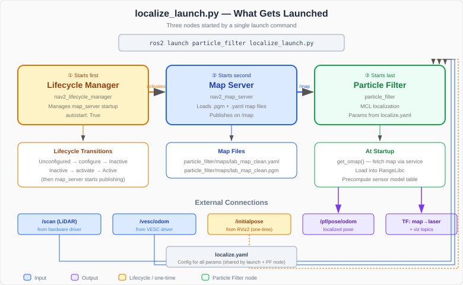

Understanding the Launch File¶
When you run ros2 launch particle_filter localize_launch.py, three nodes start behind the scenes. This page walks through localize_launch.py to explain what each piece does.
What Happens When You Launch¶
ros2 launch particle_filter localize_launch.py
This single command starts:
Lifecycle Manager — brings the map server through its startup sequence
Map Server — loads your saved
.pgmmap and publishes it on/mapParticle Filter — subscribes to
/scanand/vesc/odom, publishes localized pose
These three nodes work together: the lifecycle manager activates the map server, which provides the map that the particle filter uses for ray casting.


Loading the Config¶
localize_config = os.path.join(
get_package_share_directory('particle_filter'),
'config',
'localize.yaml'
)
localize_config_dict = yaml.safe_load(open(localize_config, 'r'))
map_name = localize_config_dict['map_server']['ros__parameters']['map']
The launch file reads localize.yaml at launch time (not runtime) to extract the map name. This is a common ROS 2 pattern — reading the YAML config during launch so the map server and particle filter can both use the same map without duplicating the setting.
get_package_share_directory('particle_filter') resolves to the installed package location (inside install/), not the source directory. This is why you must run colcon build after changing config files.
Launch Arguments¶
localize_la = DeclareLaunchArgument(
'localize_config',
default_value=localize_config,
description='Localization configs')
map_name_la = DeclareLaunchArgument(
'map_name',
default_value=map_name,
description='Map name (without extension) in particle_filter/maps/')
Two arguments are declared with defaults from the config file:
localize_config— path to the full YAML config (rarely overridden)map_name— the map name without extension, read fromlocalize.yaml
You can override the map name at launch time:
ros2 launch particle_filter localize_launch.py map_name:=hallway_map
Node 1: Particle Filter¶
pf_node = Node(
package='particle_filter',
executable='particle_filter',
name='particle_filter',
parameters=[LaunchConfiguration('localize_config')]
)
This launches the particle filter node (the particle_filter.py code reviewed in the previous page). It receives all its parameters — max_particles, range_method, motion_dispersion_theta, etc. — from localize.yaml via LaunchConfiguration('localize_config').
Node 2: Map Server¶
map_server_node = Node(
package='nav2_map_server',
executable='map_server',
name='map_server',
parameters=[{'yaml_filename': PathJoinSubstitution(
[FindPackageShare('particle_filter'), 'maps',
[LaunchConfiguration('map_name'), '.yaml']])},
{'topic': 'map'},
{'frame_id': 'map'},
{'output': 'screen'},
{'use_sim_time': True}]
)
The map server is a Nav2 node that loads an occupancy grid map from a .yaml + .pgm file pair and publishes it on the /map topic. Key details:
yaml_filename — built dynamically from
map_name. Ifmap_nameislab_map_clean, it resolves to.../particle_filter/maps/lab_map_clean.yamlPathJoinSubstitution — a ROS 2 launch utility that joins path segments and resolves
LaunchConfigurationvalues at launch timeFindPackageShare — finds the installed package’s
share/directory (notsrc/)frame_id: map — the map is published in the
mapcoordinate frameuse_sim_time: True — this is a legacy setting from simulation; on real hardware it has no practical effect since the particle filter uses wall-clock time
Note
The map server is a lifecycle node — it does not start publishing immediately. It must be transitioned through configure → activate states before it serves the map. That is what the lifecycle manager does.
Node 3: Lifecycle Manager¶
nav_lifecycle_node = Node(
package='nav2_lifecycle_manager',
executable='lifecycle_manager',
name='lifecycle_manager_localization',
output='screen',
parameters=[{'use_sim_time': True},
{'autostart': True},
{'node_names': ['map_server']}]
)
The lifecycle manager watches the map server and automatically transitions it through its startup states:
Unconfigured →
configure→ Inactive — loads the map file into memoryInactive →
activate→ Active — starts publishing on/map
autostart: True means this happens automatically at launch. Without the lifecycle manager, you would need to manually call the state transitions via service calls.
node_names: ['map_server'] tells the lifecycle manager which nodes to manage. Only the map server needs lifecycle management here — the particle filter is a regular node that starts immediately.
Launch Order¶
ld.add_action(nav_lifecycle_node)
ld.add_action(map_server_node)
ld.add_action(pf_node)
The nodes are added in this order:
Lifecycle manager first — so it is ready to manage the map server as soon as it appears
Map server second — the lifecycle manager detects it and transitions it to active
Particle filter last — it calls the
/map_server/mapservice to fetch the map, so the map server must be active first
Note
The particle filter’s get_omap() method waits in a loop for the map service to become available (wait_for_service), so even if the map server takes a moment to activate, the particle filter will wait patiently.
The Complete Flow¶
When you run ros2 launch particle_filter localize_launch.py:
Launch reads
localize.yamlto get the map name and config pathLifecycle manager starts and waits for the map server
Map server starts, lifecycle manager transitions it to active, map is published on
/mapParticle filter starts, calls
/map_server/mapto fetch the occupancy gridParticle filter loads the map into RangeLibc for GPU ray casting
Particle filter waits for LiDAR (
/scan) and odometry (/vesc/odom) messagesYou set the initial pose via RViz2’s 2D Pose Estimate
The filter begins localizing — publishing pose on
/pf/pose/odomand TF onmap→laser